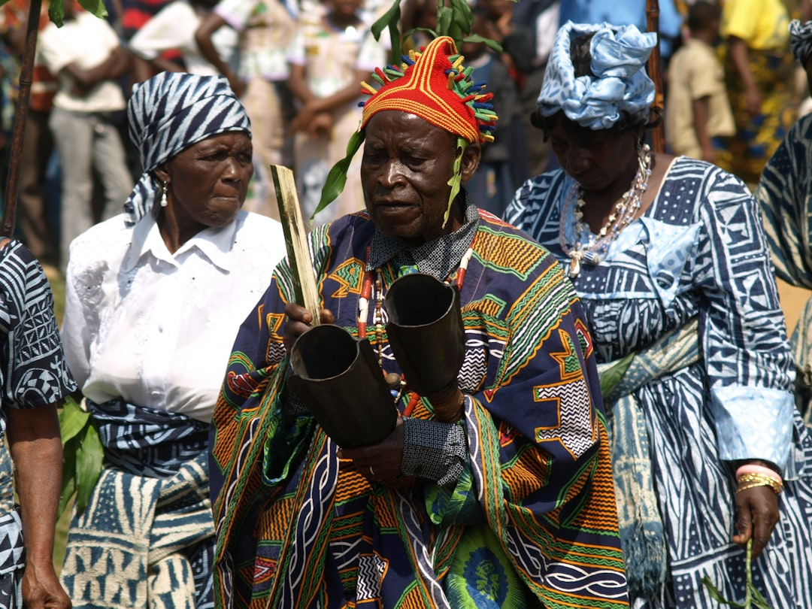
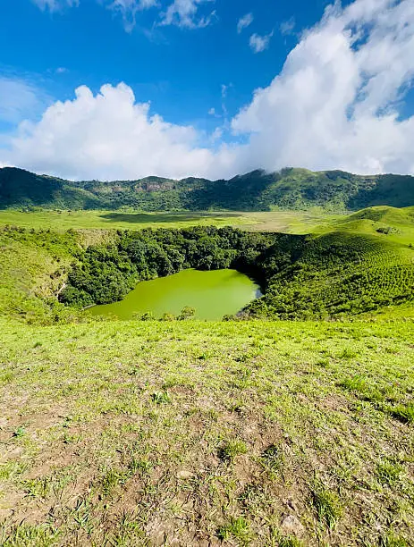

CamerXplore
un voyage
en un clic
Découvrez un pays qui regorge de nombreuse ressources naturel,tribus,langue,culture...
et où chaque région rencontre une histoire unique

28+millions
Population
475 442 km 2
Population
10 régions
Régions
280+ langues
Langues
Pourquoi le cameroun ?
Surnommé "l'Afrique en miniature",le Cameroun réunit tous les atouts du continent
africain en un seul pays.
la capitale politique est 'Yaoundé' et la capitale économique est 'Douala'

CulturePlus de 250 ethnies avec leurs traditions,danses et artisanat uniques
Des paysages variés: plages,montagne,savanes et forêts tropicales

GéographieL'Afrique en miniature avec tous les climats et écosystemes du continent
Pret à découvrir le cameroun ?
Explorez nos ressources pour planifier votre visite ou en
apprendre d'avantage sur ce pays fascinant